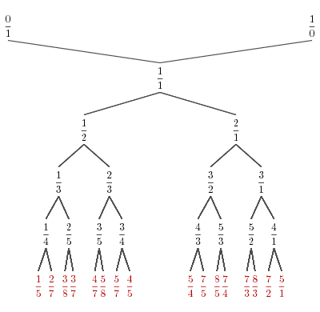

Spring 2011, Tuesday and Thursday 9:30-11am in room 2-151.
Instructor: Dr. Lionel Levine
Office Hours: Tue 12-1, Wed 1-2 in room 2-335.
Combinatorics encompasses not just the art of counting, but also analyzing
the structure of discrete objects such as
graphs, matroids and partially ordered sets. In algebraic
combinatorics, one associates algebraic objects like
groups,
rings and
vector spaces to combinatorial
objects in order to reveal
more of their structure.
Stern-Brocot tree

Identity element of the sandpile group
Textbook:
A Course In Combinatorics, 2nd edition, by
Van Lint and Wilson. Amazon
;
Coop
Concrete Mathematics, by Graham, Knuth and Patashnik. Amazon
;
Coop
Purchasing these is optional. Van Lint and Wilson does not cover all of
the topics we will cover, so if you want to be assured of having a
textbook to reference for all topics, you should get all the books. These
are great books that you will cherish for many years. But I know that
textbooks aren't cheap, so I'll try to supplement with handouts to make
it possible to get by on just the main text Van Lint and Wilson.
Syllabus:
Lecture 1 (Feb 1): necklaces and Fermat's little theorem. Notes (.tex ; .pdf) by Lou Odette.
Lecture 2 (Feb 3, guest lecturer Emily Peters): inclusion-exclusion (chapter 10 of Van Lint and Wilson).
Notes (.tex ; .pdf) by Jacob Bower.
Lecture 3 (Feb 8): multiplicative functions, Dirichlet series, permutations, Stirling numbers (chapter 13 of Van Lint and Wilson).
Notes (.tex ; .pdf) by David Thomas.
Lecture 4 (Feb 10): Stirling numbers continued, linear recurrences. Notes (.tex ; .pdf) by Minseon Shin.
Problem Set 2, due Thursday Feb 17 at the beginning of class.
Lecture 5 (Feb 15): linear recurrences, generating functions (chapter 4 of Stanley; also Concrete Mathematics section 2.6 has more on the analogy between difference calculus and differential
calculus).
Notes (.tex ; .pdf) by David Witmer.
Lecture 6 (Feb 17): linear recurrences and generating functions continued. Notes (.tex ; .pdf) by Dennis Tseng.
Problem Set 3, due Thursday Feb
24 at the beginning of class.
No class on Tuesday Feb 22 (Monday schedule)
Lecture 7 (Feb 24): partially ordered sets (Stanley 3.1-3.2)
Notes (.tex ; .pdf) by Andrew Geng.
Problem Set 4, due Tuesday March 8 at the beginning of class.
Lecture 8 (Mar 1): lattices, Birkhoff's theorem (Stanley 3.3-3.4).
Notes (.tex ; .pdf) by Christopher Policastro.
Lecture 9 (Mar 3): chains, linear extensions, incidence algebras (Stanley 3.5-3.6)
Notes (.tex ; .pdf) by Damien Jiang.
Lecture 10 (Mar 8): Mobius inversion (Stanley 3.7-3.8)
Notes (.tex ; .pdf) by Alex Zhai. Midterm: Thursday March 10. The
material on the midterm will encompass lectures 1-9.
Practice problems for the
midterm. If your midterm score was lower than 15, you may hand in one or more of the practice problems PM1, PM7, PM11 by Tuesday March 29. Each problem solved
correctly is worth an additional point on the midterm, up to a cap of 15. For example, if your midterm score was 13.5, you could hand in 2 problems to raise it to 15.
Lecture 11 (Mar 15): Mobius inversion continued (Stanley 3.9-3.10).
Notes (.tex ; .pdf) by Ben Bond.
Lecture 12 (Mar 17): mu(Pi_n), zeta polynomial, Boolean algebras.
Notes (.tex ; .pdf) by Lou Odette.
- Spring Break -
Lecture 13 (Mar 29): combinatorics of finite fields, q-binomial coefficients (Van Lint & Wilson chapter 24).
Notes (.tex ; .pdf) by Alex Arkhipov.
Lecture 14 (Mar 31): finite fields continued, hyperplane arrangements
Notes (.tex ; .pdf) by Leon Zhou.
Problem Set 5, due Thursday April 7 at the beginning of class.
Lecture 15 (Apr 5): hyperplane arrangements (Stanley 3.11; see also these notes pages 1-5).
Notes (.tex ; .pdf) by Jacob Bower.
Lecture 16 (Apr 7): matchings, Hall's marriage theorem (van Lint & Wilson chapter 5).
Notes (.tex ; .pdf) by Whan Gheng.
Problem Set 6, due Thursday April 14 at the beginning of class.
Lecture 17 (Apr 12): matchings of planar graphs, Kasteleyn matrix.
Notes (.tex ; .pdf) by Santiago Cuellar.
Lecture 18 (Apr 14): Kasteleyn's theorem, domino tilings of an m-by-n
rectangle (see chapter 2 of these notes
by Richard Kenyon).
Notes (.tex ; .pdf) by Taoran Chen.
Problem Set 7, due Thursday April
21 at the beginning of class.
No class on Tuesday Apr 19 (MIT holiday)
Lecture 19 (Apr 21): matrix-tree theorem (Stanley 5.6 in volume 2; see also chapter 9 of Stanley's notes).
Notes (.tex ; .pdf) by David Witmer.
Problem Set 8, due Tuesday May 3 at the beginning of class.
Lecture 20 (Apr 26): Eulerian tours (Stanley 5.6 in volume 2; see also chapter 10 of Stanley's notes).
Notes (.tex ; .pdf) by Josh Alman.
Lecture 21 (Apr 28): Polya theory of counting (Van Lint & Wilson chapter 37; see also chapter 7 of Stanley's notes).
Notes (.tex ; .pdf) by Jacob Bower.
Lecture 22 (May 3): commutative monoids, Smith normal form of an integer matrix.
Notes (.tex ; .pdf) by Lou Odette.
In-class final: Thursday May 5. The final will cover material from lectures 10-21.
Lecture 23 (May 10): abelian sandpile model.
Notes (.tex ; .pdf) by David Thomas.
Lecture 24 (May 12): the sandpile group of a graph.
Notes (.tex ; .pdf) by Christopher Pollicastro.
Topics:
(subject to change)
Combinatorics and number theory. Possible topics include
multiplicative functions, convolution, Dirichlet series, necklace
counting; Euclidean algorithm, Stern-Brocot tree, continued fractions and
the group SL_2(Z); Sturmian words; counting over finite fields and
q-binomial theorem.
Combinatorics and linear algebra. Possible topics include
adjacency matrix and Laplacian of a graph, random walks and electrical
networks, matrix-tree theorem, counting Eulerian tours; Gessel-Viennot
theorem; perfect matchings and Kasteleyn matrix; partially ordered sets,
lattices, incidence algebra, Birkhoff's theorem on distributive lattices;
Hall's marriage theorem, Dilworth's theorem, max-flow min-cut; linear
recurrences and rational generating functions.
Combinatorics and group theory. Possible topics include Polya
theory of counting; Cayley graphs; monoids, commutative monoids, minimal
ideal; chip-firing; Smith normal form; the sandpile group of a graph and
its action on spanning trees.
(Please note that the course catalog description - involving Radon
transform, etc. - is out of date and inaccurate!)
Prerequisites:
You should be comfortable with abstract linear
algebra (i.e., thinking of a matrix as a function between two vector
spaces rather than a block of numbers) and basic group theory. Some
familiarity with basic graph theory would be helpful, but is not required.
You should know how to write a rigorous proof.
Grading:
Homework (30%): Hand in 30 points worth of problems from the
weekly problem sets. Each problem is worth one point (=3 subpoints)
unless marked otherwise. Note: once you earn a total of 30 points
(=90 subpoints) on problem sets - even if those points are spread out over
more than 30 problems - you will get full credit for the homework portion
of the grade.
Exams (50%): There will be one midterm (20%, tentative date March
10) and one in-class final (30%, tentative date May 5). There will not be
a final during final exam week.
Lecture Notes (20%): Type up notes for one or two lectures using LaTeX. LaTeX is
very versatile and widely used for writing technical documents of all
kinds. It will serve you well if you go on in math or almost any
technical field. The notes are due one week after the lecture and will be
posted online as a study aide.
Instructions for notetakers: download the latex template alg-comb-lecture-n.tex and change the "n" in the file name to the
number of the lecture you took notes for (the numbers are consecutive integers starting from lecture 1 on Feb 1). When you compile the template in latex, it produces a pdf file that looks
like this. To learn more about latex, see this wiki.
If you have questions about the course, or to request a particular topic,
please email
me.